🐠 Zona Crepuscular
En esta zona llega poca luz solar, lo que limita la fotosíntesis. Alberga una gran variedad de peces, camarones, calamares, medusas y otros animales.
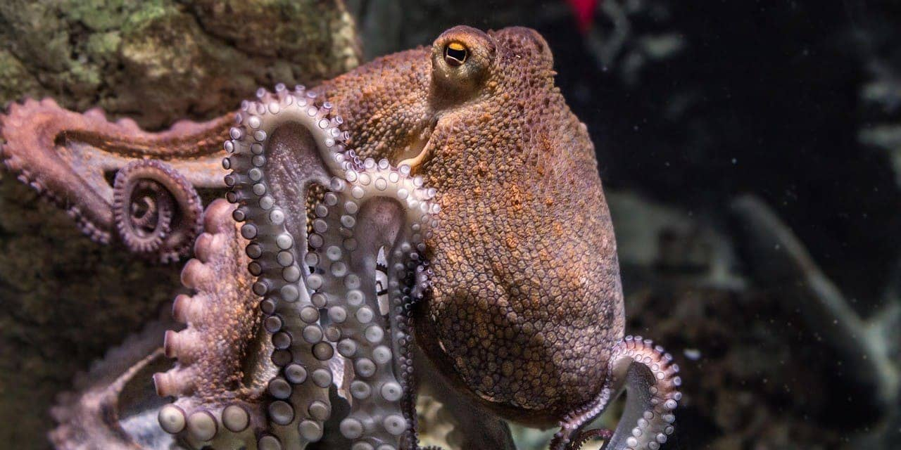
Pueden llegar a medir 1 a 3 metros de largo y pesar hasta 10 kilos.
Son carnívoros. Se alimentan de crustáceos, peces, otros moluscos.
Los pulpos son ovíparos. Los pulpos copulan, después de realizar una parada nupcial. Uno de los tentáculos del macho tiene funciones reproductoras y se desprende quedando en el interior de la hembra; la puesta se produce durante la primavera y el verano. La hembra deja de comer después de ponerlos y los cuida, pero muere al poco tiempo y el macho vuelve a las profundidades.
Aunque no son mortales, las mordeduras pueden infectarse si no se limpian correctamente. Los pulpos no suelen atacar a los humanos, pero es importante tener precaución ante mordeduras y la posibilidad de que algunos pulpos posean veneno.
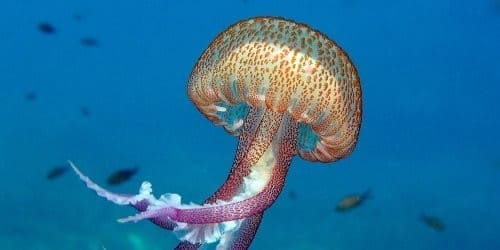
Puede llegar a medir hasta 20 cm de diámetro.
Se alimenta de zooplancton, crustáceos, huevos, peces y otras medusas.
Se reproduce en primavera y en otoño y posee sexos separados. Los machos y las hembras liberan el esperma y los huevos, que son fecundados en el agua. De cada huevo sale un embrión y, finalmente, una larva microscópica que se desplaza por el agua. Cuando la larva crece, pasa a un estadio juvenil, donde se origina la forma conocida como éfira, es decir, una medusa joven.
Sus tentáculos contienen células urticantes que causan picazón, ardor, dolor e incluso reacciones más graves en algunos casos
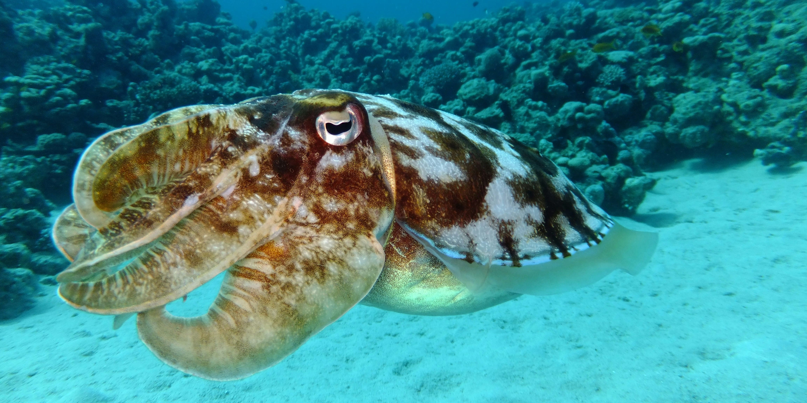
Llegan a medir de 30 a 60 cm.
Es un molusco carnívoro que se alimenta principalmente de peces, crustáceos y otros moluscos.
Se reproducen por medio de huevos, con fecundación interna. El macho posee un tentáculo modificado, llamado hectocótilo, que utiliza para transferir un paquete de esperma (espermátforo) a la hembra. La hembra deposita los huevos, generalmente en racimos, en el suelo marino, donde se desarrollan.
Algunas especies de calamares, como el calamar de Humboldt, el calamar gigante y el calamar colosal, pueden representar una amenaza para los humanos debido a su tamaño, fuerza y comportamiento agresivo.
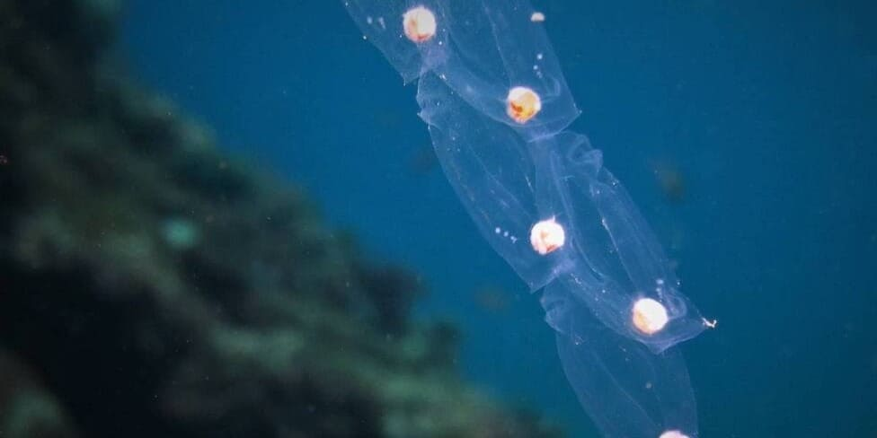
Su tamaño varía, entre 1 a 20 cm.
Son filtradoras no selectivas, alimentándose de cualquier organismo que atrapan en su red.
Presentan un ciclo de vida complejo que involucra reproducción sexual y asexual. En su etapa asexual, producen largas cadenas de salpas conectadas entre sí, y en la etapa sexual, se reproducen mediante la fusión de células sexuales, creando nuevos individuos.
No pican ni provocan lesiones a los humanos.
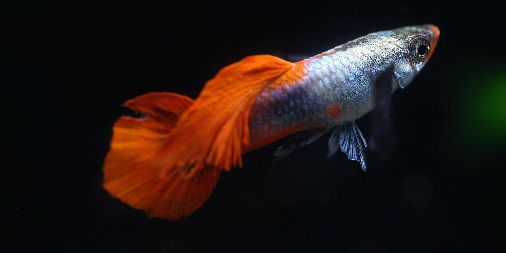
Son peces pequeños, aunque las hembras son un poco más grandes que los machos, llegando a medir entre 3 y 5 cm de largo para los adultos, y los machos de 2 a 3 cm. Además, su cuerpo no es tan colorido sino más opaco que el de los machos, con colores grises y verdosos, y su aleta caudal es más redondeada.
Estos peces se alimentan de restos de algas, diatomeas, invertebrados, fragmentos de plantas, larvas de insectos, entre otras fuentes de alimentos.
Son ovovivíparos, lo que significa que las hembras desarrollan los huevos en su interior hasta que nacen los alevines. Las hembras maduran los huevos y los incuban en su vientre, donde se desarrollan hasta que nacen. Los alevines nacen ya listos para alimentarse por sí mismos.
Pueden representar amenazas en ecosistemas naturales y, en algunos casos, son considerados especies invasoras. En acuarios, los guppy pueden sufrir enfermedades, estrés y canibalismo, especialmente si no se mantienen en condiciones óptimas.
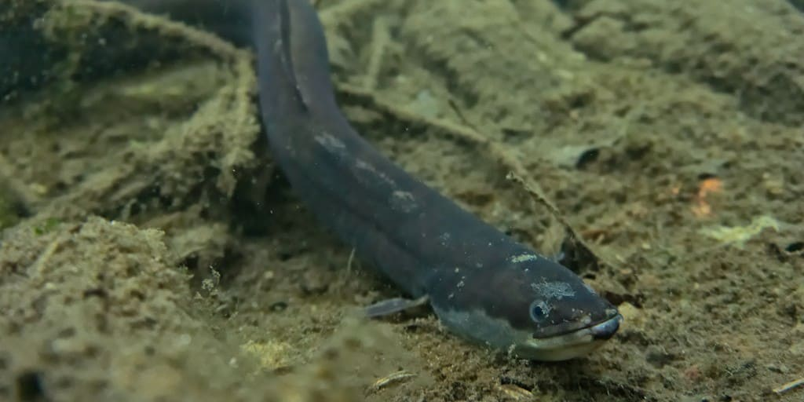
Llegan a medir entre 60 y 80 cm.
Son principalmente carnívoras y se alimentan de una variedad de presas, dependiendo de su especie y hábitat. Las anguilas juveniles se alimentan de invertebrados, mientras que las adultas suelen consumir peces, anfibios, crustáceos y, en algunos casos, incluso pueden ser caníbales.
La reproducción de la anguila es un proceso único que involucra una migración a grandes distancias y la liberación de huevos en aguas saladas; los machos y hembras migran desde los ríos de Europa hacia el Mar de los Sargazos para reproducirse. Una vez en el mar, liberan sus gametos y luego mueren, completando su ciclo de vida.
La anguila, en general, no representa una amenaza directa para el ser humano, excepto en el caso de la anguila eléctrica. Las anguilas no venenosas, como la anguila europea, no son peligrosas para las personas.
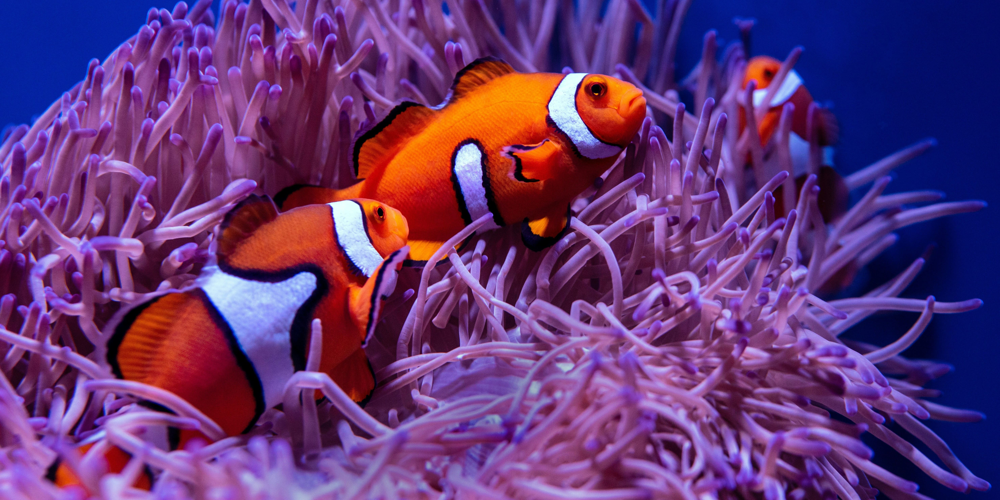
Pueden alcanzar hasta 11 centímetros de largo en la etapa adulta.
Son omnívoros, se alimentan de plancton, algas, parásitos de la anémona y pequeños invertebrados.
Su reproducción es bastante curiosa, ya que entorno y madurez determinan el sexo de este pez, cosa que ocurre entre los 12 y los 24 meses. Sucede también que, si la hembra líder muere o es expulsada del grupo, el macho cambia de sexo, al tiempo que el resto de los individuos pasa a otro rango en la jerarquía. Una vez que la temperatura del agua sube a 28 ºC, aproximadamente, comienza la puesta de huevos.
No representa una amenaza directa para el ser humano. En su hábitat natural, no es peligroso, y su principal amenaza proviene de factores externos como el cambio climático, la contaminación y la sobrepesca.

Pueden alcanzar entre 4 y 12 cm de largo, aunque algunos pueden llegar hasta 20 cm.
Son omnívoros, se alimentan de insectos, larvas, microorganismos y plantas, incluyendo algas.
Suelen reproducirse en pareja o en grupo, y los machos comienzan a exhibir destellos de color en la parte superior de la cabeza. Las hembras del pez arcoíris de Boeseman suelen poner de 10 a 20 huevos y tardan aproximadamente dos semanas en eclosionar.
No representan una amenaza o riesgo directo para los seres humanos. No son venenosos ni tienen dientes que puedan causar daño. Sin embargo, algunas especies pueden ser consideradas invasoras en ciertos ecosistemas y podrían causar problemas ecológicos si son introducidas fuera de su hábitat natural. Además, algunos peces arcoíris pueden ser vulnerables a enfermedades que se pueden transmitir a otros peces en un acuario.
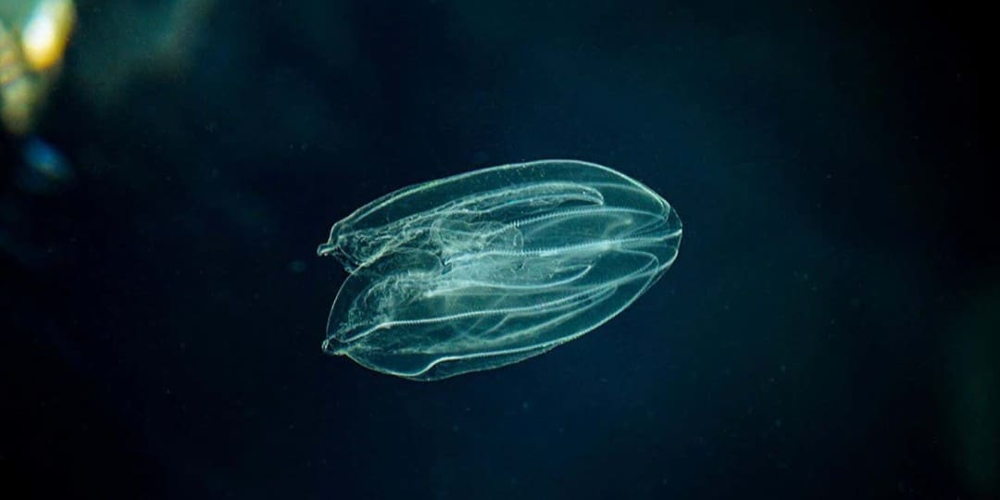
Varía según la especie.
Son depredadores que se alimentan principalmente de zooplancton, como huevos y larvas de otros animales marinos.
Se reproducen principalmente de manera sexual, aunque algunas especies también pueden reproducirse asexualmente. La mayoría son hermafroditas, lo que significa que poseen órganos reproductores masculinos y femeninos, y pueden autofecundarse.
No son una amenaza para los seres humanos. A diferencia de las medusas comunes, no poseen aguijones venenosos que puedan causar picaduras dolorosas, sin embargo, pueden ser un riesgo para otros animales marinos al ser depredadoras de zooplancton y otras medusas.
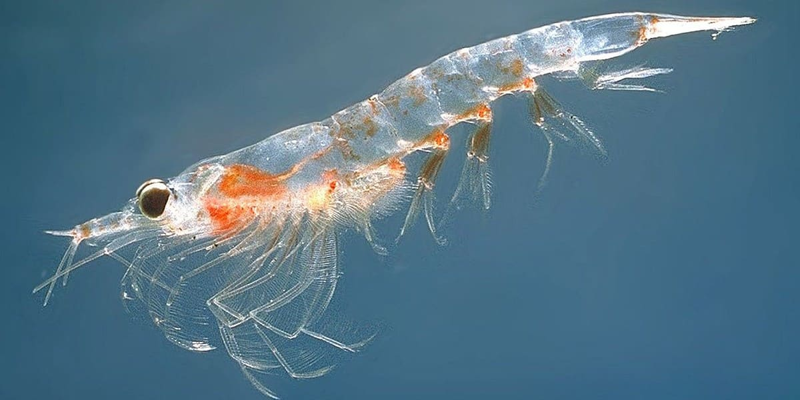
Son pequeños, con un tamaño promedio de entre 3.5 y 7 centímetros.
Se alimentan de fitoplancton (plantas microscópicas).
Se reproduce a través de un comportamiento similar a la fecundación interna, donde el macho deposita un paquete de esperma en la hembra. Las hembras desovan hasta 10,000 huevos a la vez, y estos huevos se hunden en las profundidades del océano para eclosionar. El período de reproducción suele ser en verano, con las hembras desovando varias veces durante la temporada de desove.
Aunque no representa una amenaza directa para la salud humana, sí tiene un impacto significativo en los ecosistemas marinos y en la capacidad de las ballenas para recuperarse. La sobreexplotación del krill puede afectar negativamente a los animales que dependen de él como fuente de alimento, incluyendo ballenas, pingüinos, focas y aves marinas.
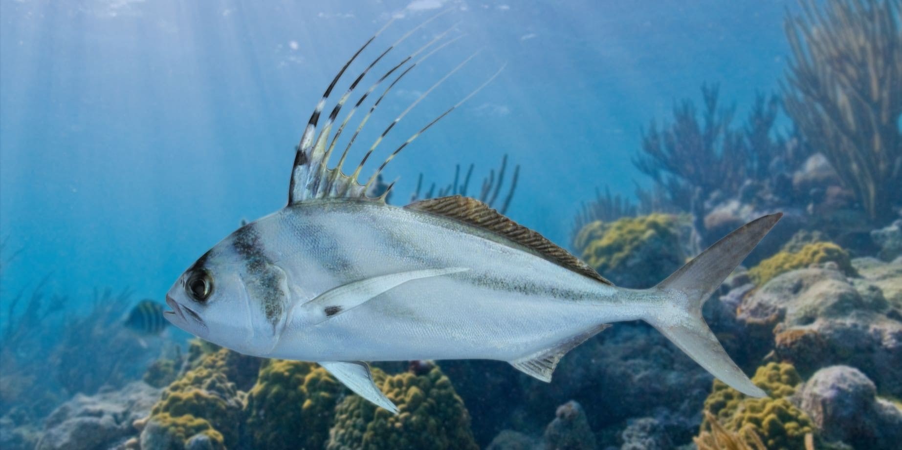
El más grande que han capturado medía 1.63my el más pesado casi 52kg.
Se alimenta de crustáceos, moluscos y otros peces.
Se reproduce por fertilización externa, liberando huevos y espermatozoides en el agua, un proceso llamado desove. La temporada de reproducción varía según la ubicación, pero generalmente ocurre durante los meses más cálidos. Los machos a menudo protegen los huevos hasta que eclosionan.
No es una amenaza directa para los humanos en el sentido de que no es una especie agresiva que ataca a las personas. Sin embargo, sí se puede considerar una amenaza en términos de pesca y conservación, debido a su popularidad como objetivo deportivo y a la sobrepesca que puede sufrir.
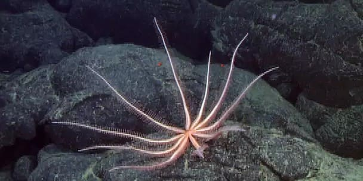
Varía dependiendo de la especie y su edad. En promedio, pueden alcanzar un diámetro de hasta 40 centímetros
Se alimentan principalmente de corales, pero también pueden comer otras criaturas marinas.
Se reproduce sexualmente, con sexos separados y fertilización externa. Durante la reproducción, liberan gametos al agua marina, donde se produce la fertilización.
No representa una amenaza directa para los seres humanos, pero sí para los ecosistemas marinos, especialmente los arrecifes de coral.
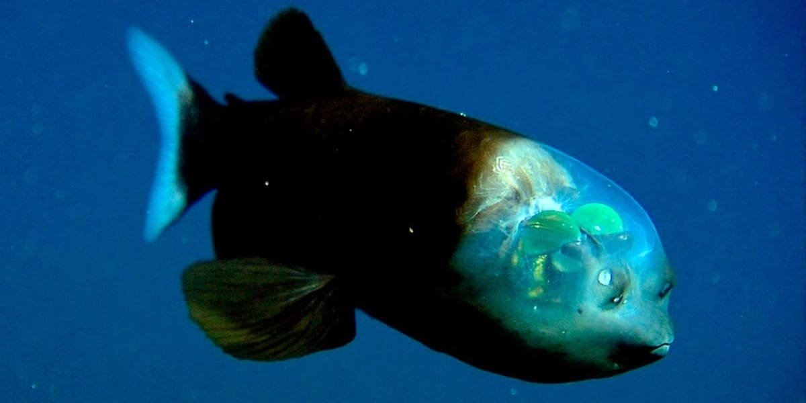
El tamaño del pez duende o pez con cabeza transparente es pequeño, generalmente entre 5 cm y 20 cm de longitud.
Se alimenta de pequeños crustáceos y peces.
Se cree que el pez duende es ovíparo, y que por ser una especie solitaria, la fecundación de sus huevos las realiza de manera que la hembra pondrá sus huevos y luego el macho los fecundará. Las larvas y huevos son pelágicos, que significa que están cubiertos de una gota de aceite que les hace emerger en la superficie hasta que eclosionan.
No representa una amenaza para los seres humanos.
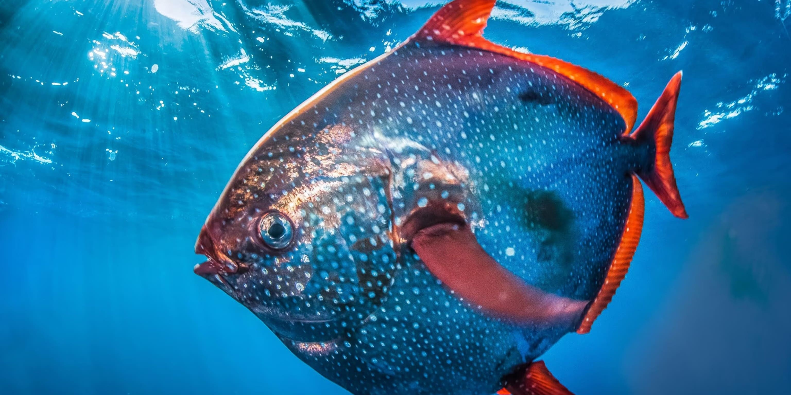
Puede alcanzar hasta 2 metros de largo y pesar más de 100 kg.
Se alimenta de medusas, calamares, peces pequeños y crustáceos.
Es una especie de pez ovíparo, lo que significa que reproduce por medio de huevos que son depositados en el agua y fecundados externamente.
No es una amenaza para el ser humano.
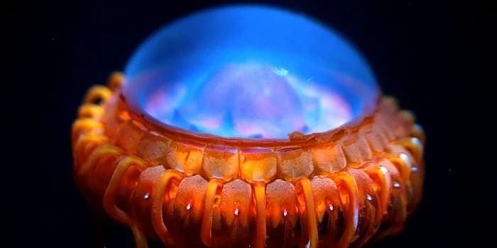
Su diámetro varía entre 2,5 y 20 cm. Su longitud (con tentáculos) varía entre 3,8 y 3,6 metros.
Se alimenta de pequeños crustáceos.
Se reproduce de dos maneras: asexualmente y sexualmente. La reproducción asexual implica el desarrollo de pólipos que luego producen brotes que se convierten en larvas. La reproducción sexual ocurre cuando una medusa se adhiere a otra y se aparean.
No representa una amenaza mortal para los humanos. Aunque algunas especies de medusas, como la cubomedusa, pueden ser muy peligrosas, la mayoría de las picaduras de medusa, incluyendo las de Atolla, son dolorosas pero no suelen ser mortales.